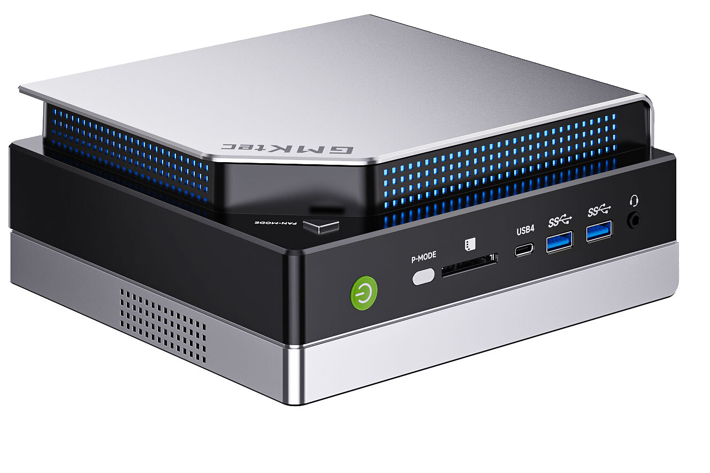
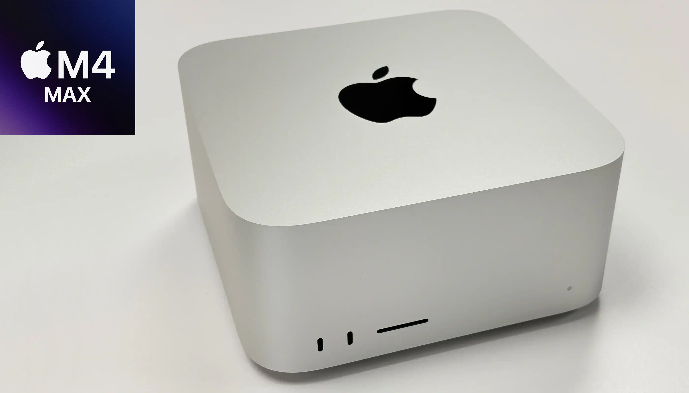
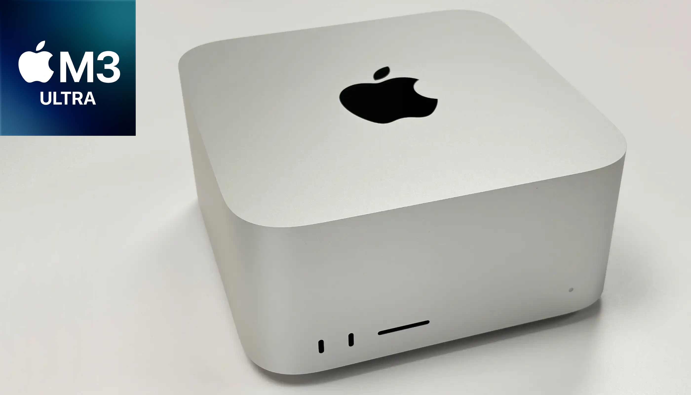
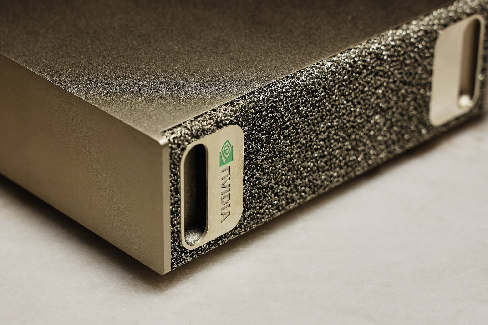
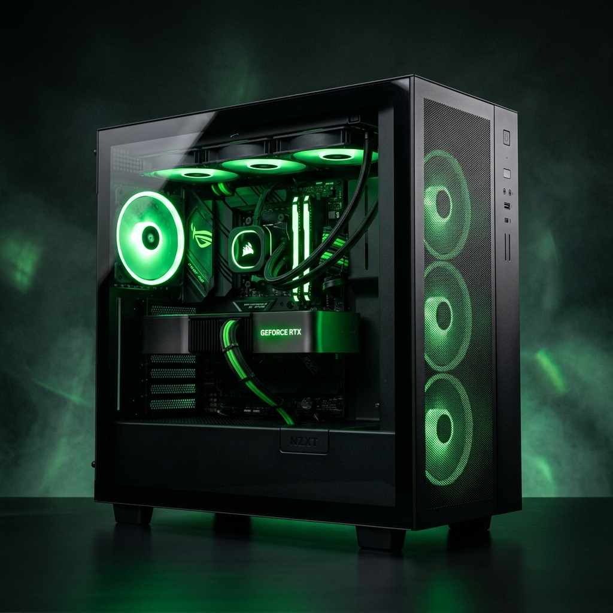
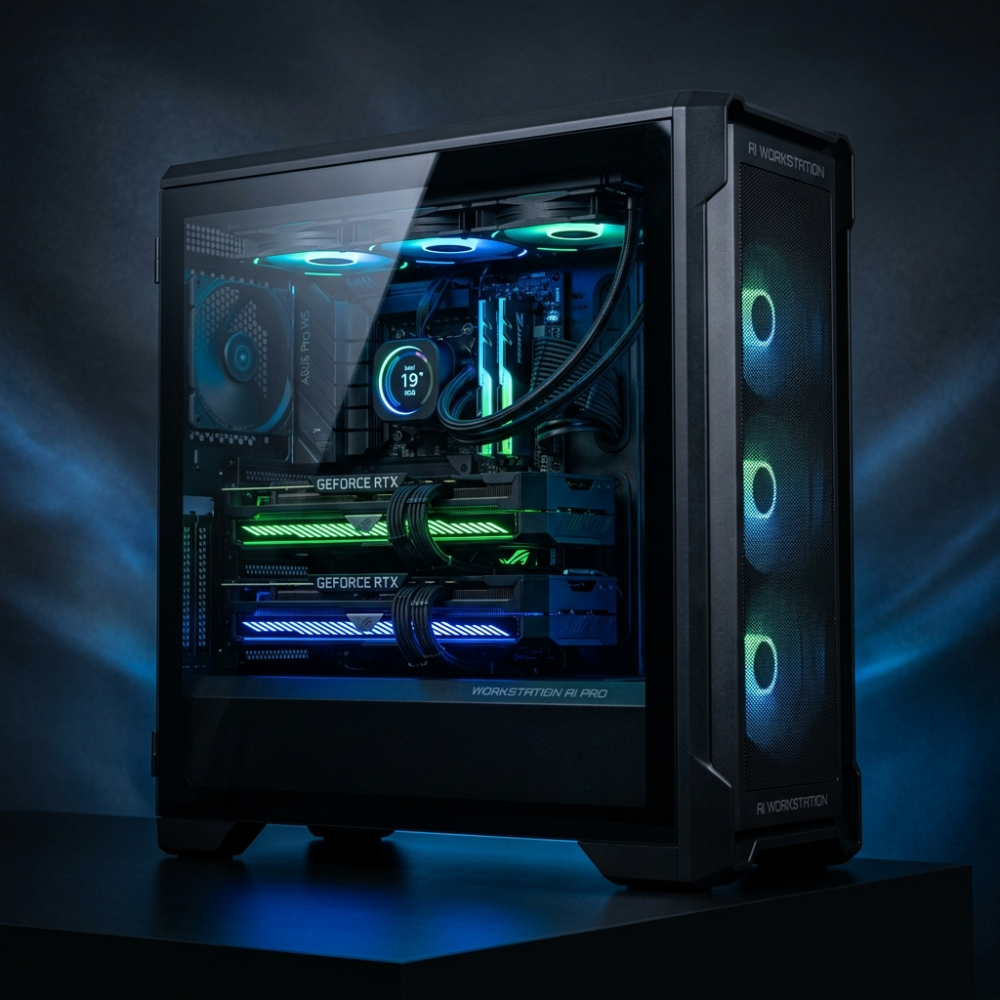

Compact AI workstation featuring unified memory architecture, ideal for running local LLMs and daily operations.

Exceptional single-user AI performance in a compact form factor with the M4 Max chip and high-Memory bandwidth unified memory.

Apple's most powerful desktop chip delivers workstation-class AI throughput with massive unified memory capacity.

Compact AI supercomputer powered by the Grace Blackwell architecture. Designed for uncompromised compute density.

Solid foundation for mixed workloads and deep learning prototyping featuring a high-end single GPU.

Accelerate training times and handle larger data operations effortlessly with dual GPU compute capabilities.